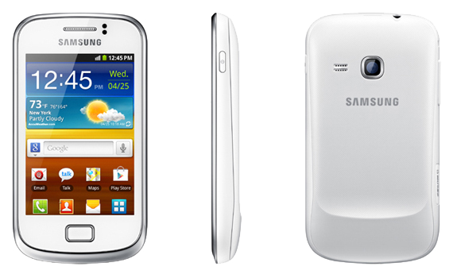

삼성 갤럭시 미니 2
1. 외관

삼성전자가 2011년 MWC에서 공개한 안드로이드 스마트폰.
2. 사양
| 프로세서 | 퀄컴 스냅드래곤 S1 MSM7227A-1 SoC. ARM Cortex-A5 800 MHz CPU 퀄컴 Adreno 200 GPU | ||
| 메모리 | 384 MB LPDDR1 SDRAM, 512 MB 내장 메모리, micro SDHC (최대 32 GB 지원) | ||
| 디스플레이 |
3.3인치 HVGA(480 x 320) RGB 서브픽셀 방식의 TFT-LCD 멀티터치 지원 정전식 터치 스크린 |
||
| 네트워크 | 기본 | HSDPA & HSUPA & UMTS, GSM & EDGE | Wi-Fi 802.11b/g/n, 블루투스 3.0 |
| - | - | ||
| 카메라 | 후면 500만 화소 | ||
| 배터리 | Li-Ion 1300 mAh | ||
| 운영체제 | 안드로이드 2.3 (Gingerbread) | ||
| 규격 | 58.6 x 109.4 x 11.6 mm, 105.3 g | ||
3. 상세
전작과 비교를 하면, AP가 MSM7x27A-1으로 변경되었다.
이것은 국내에서 출시된 갤럭시 M 스타일의 AP와 동일하며 클럭은 800 MHz로 갤럭시 M 스타일 하고는 달리 기본클럭을 유지한다.
또한 전작에서는 512 MB 내장 메모리가 어플설치용량 150 MB를 제외하고는 모두 시스템에 주어졌지만, 이번에는 4 GB를 탑재해서 3 GB 정도는 자신이 사용할 수 있게 되었다!!!